Speculative Decoding：性能提升还是假象？
Xiaoxuan Liu* 1、Jiaxiang Yu* 1、Jongseok Park1、Ion Stoica1、Alvin Cheung1
摘要
Speculative decoding（SD）已成为加速大语言模型（LLM）推理的流行技术，但以往评估依赖研究原型与不切实际的小 batch，其实际有效性仍不清楚。据我们所知，本文首次在生产级、广泛部署的推理引擎 vLLM 上系统研究 SD，涵盖 n-gram、EAGLE／EAGLE-3、Draft-Model、多 Token 预测等变体，以及多种工作负载、模型规模和 batch 大小。我们分析决定性能的关键因素，量化 SD 加速比理论上界。结果表明，目标模型验证主导执行，而接受长度随输出 token 位置、请求和数据集显著变化。实测性能与理论边界间存在较大差距，这一观察揭示新的 SD 优化研究机会。性能分析及模拟器代码见 https://github.com/orgs/SpecDecode-Bench/repositories。
1 引言
SD 已成为加速 LLM 推理的高效方法，广泛用于真实负载，从对话补全（OpenAI, 2022）、问答（Cobbe et al., 2021; Rein et al., 2023）到代码任务（Jimenez et al.）。
尽管进展巨大，仍缺乏有效性的系统研究。以往仅使用原型实现而非生产系统，大幅削弱结论有效性。更糟的是，评估往往在 batch=1 下进行（Xia et al., 2024; Cai et al., 2024; Leviathan et al., 2023; Li et al., 2024b;c; 2025），无法反映实际部署。其次，SD 出现后形成众多变体，包括草稿模型方法（Miao et al., 2023; Liu et al., 2023; Zhou et al., 2023; Ye et al., 2024; Chen et al., 2024）、n-gram 方法（Saxena, 2023; Somasundaram et al., 2024）及树式方法（Cai et al., 2024; Li et al., 2024b; Lin et al., 2024; Fu et al., 2024; Li et al., 2024c; 2025）。然而，我们尚不知有系统比较它们及适用场景的分析。这给生产部署带来挑战：实践者缺乏关于不同架构和负载应选哪种变体的明确指导。
我们旨在真实部署环境中，用真实负载研究 SD。为此，在生产就绪的 vLLM（Kwon et al., 2023）上系统测试多种变体与数据集。设置看似直接，实践中却有细微而重要的问题。首先，理论上 SD 保持与标准 decoding 相同的 token 分布，但观察到输出不总相同。这源于 LLM 推理的固有非确定性（He, 2025），例如内核并行与浮点差异。我们还研究两类日益重要的场景：生成更长、更有结构内容的推理负载，以及可与 SD 互补的新兴加速技术多 token 预测（MTP）（Liu et al., 2025; Zeng et al., 2025）。所有负载上，每种变体都优于无 SD 基线。batch 增大时加速比下降，与计算受限场景中机会减少一致（Liu et al., 2024）。需要长 chain-of-thought、因而输出更长的推理负载，其加速比与标准语言建模任务相当。
随后，我们详细分析不同变体的性能。总体加速由两个关键因素决定（接下页）。
*同等贡献。1加州大学伯克利分校。通信作者：Xiaoxuan Liu，xiaoxuan.liu@berkeley.edu；Jiaxiang Yu，jxyu@berkeley.edu。
（接上页）各组成阶段的执行效率，以及 token 接受率。
我们先考察阶段执行效率。SD 通常有三阶段：提出 token、验证 token，以及调度和拒绝采样等系统开销。拆解耗时发现，提议阶段仅占很小部分，验证时执行大模型仍是主成本。因此，接受率低时，反复在被拒绝 token 上运行大模型带来显著成本。如先前工作所示（Liu et al., 2024），高负载时额外成本会高得难以承受，甚至使 SD 慢于标准 decoding。
再分析何时接受或拒绝提议 token。接受模式在请求内部、不同请求和不同数据集三个层面存在差异；不同方法行为也完全不同。例如 EAGLE 等学习型方法在多样负载中保持稳定且高接受率；n-gram 等无需训练方法更不稳定，但在代码编辑等具有频繁局部重复的任务中，偶尔可复用已见模式，得到很长接受片段。
据此，我们提出根本问题：当前 SD 距离最优加速有多远，其理论上界是什么？
首先，很多提议 token 最终被拒绝，这提示一种方向：仅验证可能被接受的 token。理想情况下，完美预测大模型输出的提议方法甚至无需调用大模型。为量化实测与理论差距，我们构建基于真实测试数据的模拟器，在全部提议 token 都被接受的理想设置下评估性能，从而最小化验证成本，达到最优加速。
其次，不同方法在不同位置的接受率更高。这种互补性意味着，自适应组合多种方法可解锁单一方法无法实现的加速。结果显示，组合可使端到端加速达到标准无 SD decoding 的 4.9 倍。
本文贡献如下：
- 生产级 SD 评估。首次在广泛采用、高度优化的 vLLM 内系统研究 SD，弥合研究原型和真实部署差距，评估多种真实负载下的主流变体。
- 加速拆解与性能瓶颈。分析发现：（1）验证成本仍占主导；（2）接受行为随位置、请求和数据集变化。据我们所知，这是首个在多样负载下深入考察时间／内存拆解及接受动态的工作。
- 加速理论上界。据此分析实测与最大可达加速的差距，利用位置特定的接受统计，在不修改提议方法的情况下计算上界，揭示正交而有前景的优化方向。
2 背景与动机
Speculative Decoding。LLM 自回归生成文本：给定提示 \((x_1,\ldots,x_n)\)，逐 token 产生输出 \((x_{n+1},\ldots,x_{n+S})\)。每步计算词表概率分布，再采样下一个 token。但虽然生成是顺序的，LLM 可以并行评估给定 token 序列的概率：一次前向传播计算 \(P(x_{n+1}\mid x_1,\ldots,x_n),\ldots,P(x_{n+S}\mid x_1,\ldots,x_{n+S-1})\)。SD（Leviathan et al., 2023; Chen et al., 2023）利用这一性质，并行评估候选 token 串，提高硬件利用率，可能一次生成多个 token。例如，小模型生成 \(k\) 个候选，目标 LLM 并行预测各位置的 \(k+1\) 个概率分布，再接受候选中满足采样方法的前 \(m\) 个 token。
SD 变体。最初标准方式是使用与目标词表相同的小草稿模型，因为拒绝采样必须在同一 token embedding 空间的概率分布上操作。后续提出量化（Lin et al., 2023; Frantar et al., 2023; Kim et al., 2024）或蒸馏（Zhou et al., 2023）目标 LLM 等构建方式。但实践中并非总有现成草稿模型，需要量化、剪枝，甚至从头预训练小模型（接下页）。
为克服独立草稿模型的限制，研究者提出无需草稿模型的方法。一种常见方式是在最后 transformer 块之上加入辅助预测层（Li et al., 2024b;c; 2025），这些“头”以隐藏状态为输入直接提议 token，但仍需要分别微调。近期工作消除事后训练：MTP（Liu et al., 2025; Zeng et al., 2025）将辅助预测头与主模型联合训练，而非事后微调，因此这些头开箱即用，接受率也显著更高。
另一类无需草稿模型的方法采用非 LLM 提议器。代表是提示查找 decoding，即 n-gram（Saxena, 2023）。直觉是输出经常包含重复短语，可以从已生成文本提取 n-gram 片段，复用为提议。这对输入输出大量重叠的代码或段落编辑尤其有效。另一个例子是使用 RAG 从外部语料检索候选（He et al., 2024）。这些非 LLM 方法展示轻量或任务专用草稿机制的潜力。
现有基准的问题。多数以往工作建立概念验证原型，因为集成到生产级引擎并不简单，需要修改多个组件。但这使公平比较困难，也无法预测实际收益，原因如下。首先，许多原型缺少生产优化，例如使用 CUDA Graphs（NVIDIA, 2024a）降低系统开销，而它是服务系统的常见特性（Kwon et al., 2023; Zheng et al., 2024）。其次，通常以 batch=1 评估，无法代表实际大规模 batch 部署。最后，缺少加速深入分析，主要关注平均延迟、数据集级接受率等高层指标（Li et al., 2024b; 2025; Xia et al., 2024）。我们认为，为全面解释和优化端到端性能，必须深入理解执行时间拆解及位置级接受行为。
3 Speculative Decoding 的端到端性能
本节评估不同模型规模、数据集上的变体性能。完整设置见附录表 5。
3.1 实验设置
推理引擎与硬件。除另有说明，均使用 vLLM v0.10.1.1。为接近真实服务，开启全部默认优化，包括 KV cache 管理、continuous batching、chunked prefill 和 CUDA Graphs。全部实验使用 80GB NVIDIA H100（NVIDIA, 2024b）。8B 模型用单 GPU；70B／106B 模型用四 GPU，TP 大小为 4。
模型与变体。评估 Llama-3 家族（Dubey et al., 2024）的 Llama3.1-8B-Instruct、Llama3-70B-Instruct；还使用 Qwen3-8B1（Yang et al., 2025）、GLM-4.5-Air-106B（Zeng et al., 2025）评估推理负载。变体如下：
- 草稿模型方法（Leviathan et al., 2023; Chen et al., 2023）：小模型每步提议 3 个草稿 token，再由目标模型验证。配对见附录表 6。
- EAGLE（Li et al., 2024b）和 EAGLE-3（Li et al., 2025）：无需独立草稿模型，采用微调辅助头，链式设置每步预测 3 个 token2。
- MTP（Liu et al., 2025）：辅助头与目标联合训练，每步 3 个草稿 token。
- n-gram（Saxena, 2023; Somasundaram et al., 2024）：无需训练，复用提示重复 n-gram，每步 3 个草稿 token，
prompt_lookup_max=7、prompt_lookup_min=3。对 InstructCoder，使用 Llama3.1-8B、Llama3-70B 及非思考 Qwen3-8B 时，额外评估每步 5 个 token，以研究更长提议。
除另有说明，最大生成长度（接下页）。
1全文 Qwen3-8B-Thinking 指开启思考模式的同一模型，Qwen3-8B 指非思考模式。
2Llama-3-70B 没有官方 EAGLE-3 权重，Qwen3-8B 没有 EAGLE 权重，GLM-4.5-Air 也没有 EAGLE-3／EAGLE 权重（Li et al., 2024b）。
（接上页）限制为 8192 token。推理负载 AIME22–24、GPQA-Main 扩大至 32,768 token，避免提前截断。decoding 温度为 0，不截断采样分布（top_p=1、top_k=-1）。
负载。评估六个代表真实应用的数据集：CNN/DailyMail（Hermann et al., 2015; See et al., 2017）摘要；ShareGPT（sha, 2024）多轮聊天；InstructCoder（Li et al., 2024a）代码编辑；GSM8K（Cobbe et al., 2021）小学数学；以及复杂推理 AIME22–24（AoPS; Project Numina）、GPQA-Main（Rein et al., 2023）。细节见附录 A.1。
生成长度与指标。虽然理论上 SD 保持相同 token 分布，实践中即便贪心 decoding 也有输出差异。表 1 在相同提示、更换 batch 大小和变体时展示生成长度变化。每种配置将各请求重复多次以匹配目标 batch 大小，对 500 个请求重复此过程，记录每个请求的生成长度。
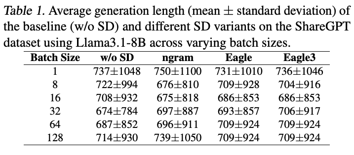
表 1 中，即便没有 SD，生成长度也随 batch 大小变化；使用 SD 亦然。这些差异并非一贯长于或短于基线，说明源于数值非确定性，而非实现 bug。近期工作（He, 2025）将其归因于 GPU 执行时的内核非确定性和浮点差异。
为消除输出长度波动，我们使用 token 吞吐量，即每秒生成 token 数，作为性能指标，以排除长度变化的混杂影响。加速比定义为有 SD 与无 SD 吞吐量之比。
3.2 结果
端到端加速。图 1 比较端到端吞吐量。多数配置中，SD 优于无 SD 基线。小／中 batch 时改善最大，此时系统内存受限，有大量计算资源可用于提议与验证。
Batch 大小。增加 batch 提高绝对吞吐量，却系统性降低 SD 相对加速比，且大模型更明显。
与先前工作一致（Liu et al., 2024），大 batch 绝对吞吐量更高、相对加速更低。例如 Llama3.1-8B 在 GSM8K 上，batch 从 1 增至 128，EAGLE 相对无 SD 基线的加速从 1.73 倍降至 1.21 倍。
总体而言，SD 用额外计算换吞吐量或延迟。小 batch 时空闲算力足够，因此在最终被拒绝 token 上的提议和验证影响有限。batch 增大后系统越来越计算受限，这些开销更昂贵，加速比下降。如第 5 节，此时验证主导整体执行。
模型越大，计算与加速的权衡越明显。例如 ShareGPT 上，EAGLE 的 batch 从 1 增至 32，Llama3.1-8B 加速下降 4.3%（1.68→1.61 倍）；Llama3-70B 下降 14.0%（1.96→1.72 倍）。70B 在四 GPU 执行，因此即便小／中 batch 也已计算受限，缺乏闲余算力验证最终被拒绝 token。
变体与数据集。多数负载中 n-gram 不如其他方法，代码编辑是显著例外。草稿模型方法在 70B 目标上最佳，但在 8B 等小模型上效用下降。
GSM8K、CNN/DailyMail、ShareGPT 趋势相似：EAGLE-3 或草稿模型方法在各 batch 上最高。而 InstructCoder 中变体差距缩小（接下页）。
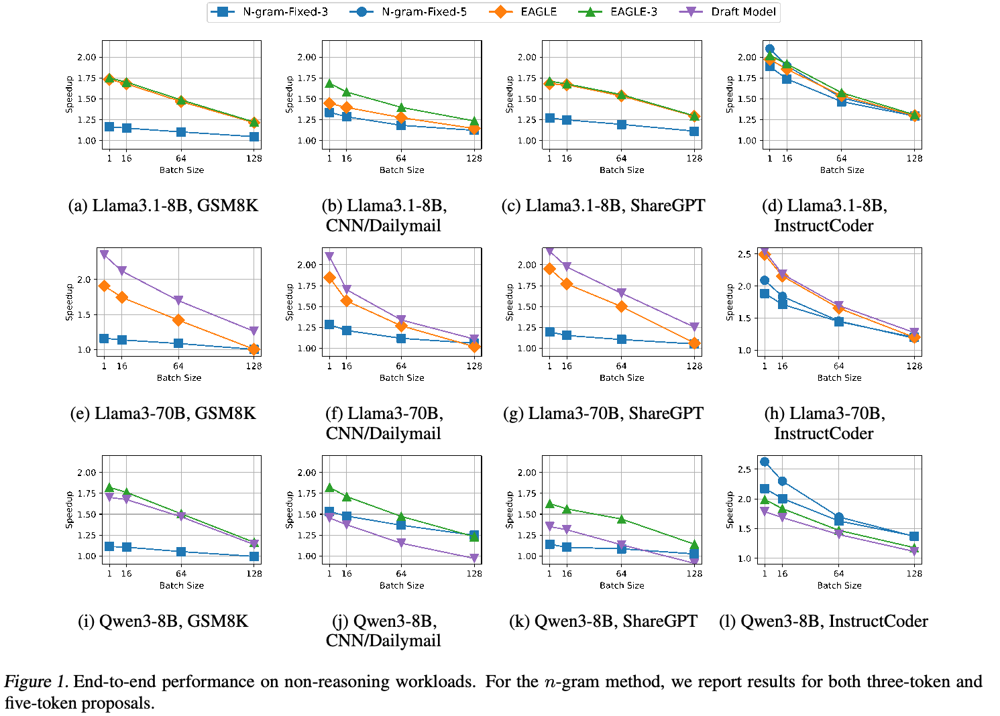
（接上页）对 Llama3.1-8B、Qwen3-8B，n-gram 甚至超过 EAGLE、EAGLE-3。原因在于 InstructCoder 等代码编辑负载有强 token 复用，简单 n-gram 草稿能有效利用。第 7 节进一步分析。
其次，多数设置下，草稿模型方法在 Llama3-70B 上优于 EAGLE。如图 7，它的接受率更高，而提议开销与 EAGLE 相近（图 4）。这符合预期：草稿模型在大规模语料上预训练，EAGLE 头仅在较有限数据上微调，天然限制接受率。
相反，在 Qwen3-8B 上，草稿模型 SD 始终不如 EAGLE-3，有时甚至不如无需训练的 n-gram。具体而言，70B 配 Llama3.2-1B 草稿，8B 配 Qwen3-0.6B。即便同数据集上两者接受率相近，或 8B 更高，小模型上的收益仍明显更低。例如 GSM8K 上，70B 接受率为 75%，8B 为 81%，但 Qwen3-8B 总体收益明显更低。
这是因为 8B 的相对草稿开销更大。70B 设置中，草稿与目标单次前向时间比约 12.5%；8B 估计为 37.5%。因此，小模型上草稿相对验证昂贵得多，削弱总体收益。
树式验证。树方法在 batch=1 略快，但优势随 batch 增大迅速消失。在各 batch 上，链式方法通常性能更好。
接下来在 SGLang 中评估树式验证（接下页）。
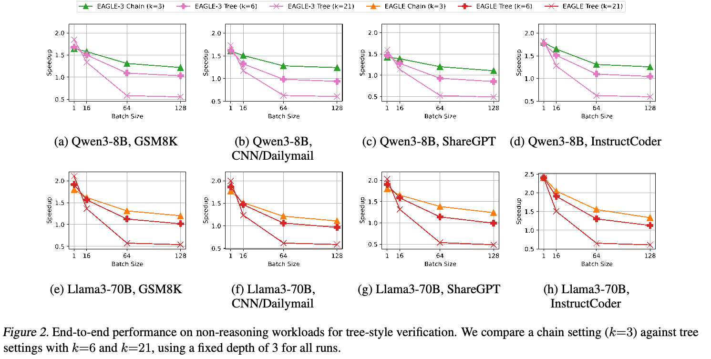
（接上页）使用 SGLang v0.5.9（Zheng et al., 2024），在非推理负载上测试 Qwen3-8B、Llama3-70B。选择 SGLang 是因为所评估 vLLM 的草稿树路径优化不足，难以公平比较不同树配置。控制实验中，所有树深固定为 3；以 \(k=3\) 链式验证为基线，测试 \(k=21\)、分支因子 4 的宽树，近似 EAGLE（Li et al., 2024b）树结构；并加入 \(k=6\)、分支因子 2 的中间树。\(k\) 是目标模型并行验证的草稿 token 数。其他设置除另有说明均同前。默认 SGLang 在 decoding 中使用动态草稿树策略优化结构（Li et al., 2024b）。链配置使用 FlashAttention-3（Shah et al., 2024），树配置使用 FlashInfer（Ye et al., 2025）。
图 2 中，树式 EAGLE／EAGLE-3 在 batch=1 略优。例如 Qwen3-8B、GSM8K 上，链为 1.65 倍，\(k=6\) 为 1.68 倍，\(k=21\) 为 1.85 倍。Llama3-70B、ShareGPT 上从 1.81 增至 1.90、2.03 倍。但 batch 增大后收益迅速消失。batch=64 时，两模型所有负载上的 \(k=21\) 树都低于 1 倍，而链全程保持高于 1 倍。
可能原因是宽树虽增加接受长度，也验证更多最终被拒绝 token。Qwen3-8B、GSM8K 上，接受长度由链的 2.25 增至 2.51、2.92，接受率却从 0.415 降至 0.300、0.095。Llama3-70B、ShareGPT 同样如此：长度 2.29→2.55→2.93，接受率 0.429→0.310→0.097。第 5 节指出验证主导成本，因而大 batch 中这些额外拒绝分支更昂贵。所以树式验证只在狭窄的小 batch 范围有益，链式总体更稳健。
推理负载。能够在长上下文保持高接受率的模型与方法，例如 EAGLE-3 及某些情况下的 n-gram，最能受益。MTP 则受限于跨草稿 token 复用单个 MTP 头。
推理负载日益普遍，理解 SD 在其中的效果很重要。这类负载提示短、生成长。我们评估 AIME22–24（Project Numina）和 GPQA-Main（Rein et al., 2023）。
图 3 给出不同 batch 的绝对生成吞吐量。为公平一致，评估限制在中等 batch。推理任务通常生成较长序列（接下页）。
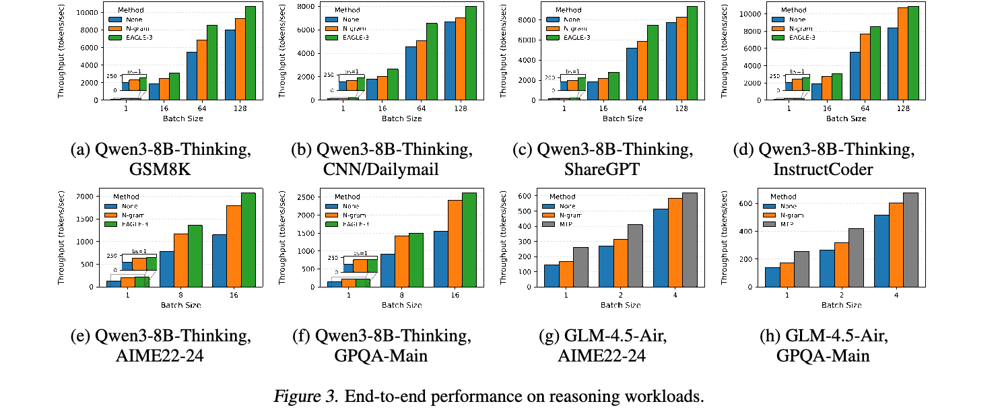
（接上页）KV cache 满后可能触发请求抢占。避免抢占，能让结果反映 SD 固有效率，而非内存压力造成的性能假象。
Qwen3-8B-Thinking 上，EAGLE-3 在各数据集始终领先，在 GPQA-Main、AIME22–24 加速 1.64–1.80 倍；n-gram 相近，为 1.50–1.58 倍。可能因为更长上下文与重复符号模式增加复用机会。第 6 节将展示 GPQA-Main 平均接受长度通常随序列增长，n-gram 增速快于 EAGLE-3。
GLM-4.5-Air 上，MTP 优于 n-gram，但未达理论上界，GPQA-Main 加速 1.3–1.8 倍。可能因为公开权重仅有第一个 MTP 模块，主要训练准确预测首个 token，却自回归复用于后续 token。逐位置接受率在 GPQA-Main 为 0.92→0.68→0.38，准确率随草稿位置急降，接受率降低，限制可达加速。
4 理解性能
本节深入理解第 3 节端到端加速。先拆解草稿、验证、拒绝采样及其他阶段的时间和内存，解释其如何限制理论上界；再考察请求内部、跨请求、跨数据集的接受模式。
4.1 端到端加速公式
原始 SD 论文（Leviathan et al., 2023）指出，令 \(c\) 为草稿方法与目标模型单次前向时间之比，\(\alpha\) 为 token 接受率，\(k\) 为提议长度，则期望总体墙钟加速为3：
\[E(\text{speedup})=\frac{1-\alpha^{k+1}}{(1-\alpha)(kc+1)}.\tag{1}\]如式所示，加速取决于两类因素：提议长度 \(k\)、草稿与目标的执行时间比 \(c\)，以及接受率 \(\alpha\)。草稿方法的绝对时间无关紧要，只有相对目标模型的时间影响可达加速。
更复杂草稿可提高 \(\alpha\)，却往往增加耗时，从而增大 \(c\)。因此最优加速需要仔细选择方法，平衡 \(c\) 与 \(\alpha\)。后续评估这些因素，并分析额外内存开销。
3该公式假设目标模型同时评估 \(k+1\) 个位置，耗时约等于并行生成单个 token。内存受限、小 batch 时通常成立；系统转为计算受限后可能失效。
5 执行时间与内存拆解
5.1 执行时间
图 4 给出基线与 SD 各阶段时间拆解。所有实验从 CNN/DailyMail 抽取 500 个请求，其他设置同表 5。每种配置报告总时间中四部分占比：（i）草稿生成：生成推测 token，n-gram 为查找操作，EAGLE／EAGLE-3 为预测头自回归生成；（ii）验证：目标模型确认提议；（iii）拒绝采样：根据验证 logits 生成最终 token；（iv）其他开销：vLLM 系统其余开销。
执行时间。验证通常占最大部分，采样可忽略。n-gram 草稿成本可忽略；EAGLE／EAGLE-3 低于 20%；草稿模型方法在所有 batch 上低于 40%。
验证占所有方法时间的 42%–95%，随模型和 batch 增大而增加。
草稿成本随机制显著变化。n-gram 所有运行均低于 2%，相对基线几乎无额外开销。EAGLE 与 EAGLE-3 类似，batch=1 时 12%–20%，batch=512 时 3%–7%。草稿模型必须额外自回归运行小模型，因而小 batch 时更贵。Llama3-70B 从 batch=1 的 21% 降至 batch=512 的 3%；Qwen3-8B 从约 47% 降至 16%。对应验证占比更低：batch=1 时 Llama3-70B 约 72%，Qwen3-8B 约 42%。
译注：本页概括称草稿模型方法均低于 40%，正文却报告 Qwen3-8B 在 batch=1 时约为 47%；两处数值均按原文保留。
采样耗时所有情况均低于 1.7%。vLLM 开销占 3%–12%，随模型和 batch 增大而下降，因为调度等固定开销与规模无关，会被摊薄。
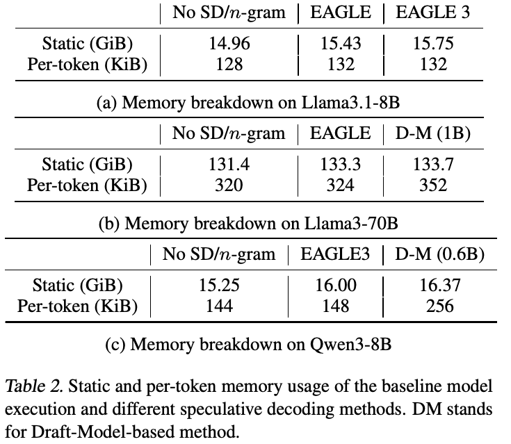
启示。验证主导端到端执行，说明运行大型目标模型仍是主计算瓶颈。接受提议时成本合理；验证最终被拒绝 token 却浪费大量计算。这引出问题：多少验证计算真正有用？如果仅验证“正确”token、消除浪费，能多快？第 8 节据此估算理论上界。
5.2 内存
表 2 给出各变体在 Llama3.1-8B、Llama3-70B、Qwen3-8B 上的 GPU 内存。采用 FP16，报告模型权重静态内存，以及根据配置计算的每 token KV cache。不报告执行中的激活张量等中间内存。计算详见 A.2。
内存。SD 额外内存通常很小，包括静态参数与 KV cache：n-gram 为零，EAGLE／EAGLE-3 低于 10%，草稿模型开销取决于选择。
我们发现 SD 内存开销很小。n-gram 从 CPU 上的生成历史取样草稿，没有 GPU 内存开销。
静态内存。指存储权重的内存。某些变体加入额外层，甚至独立模型（接下页）。
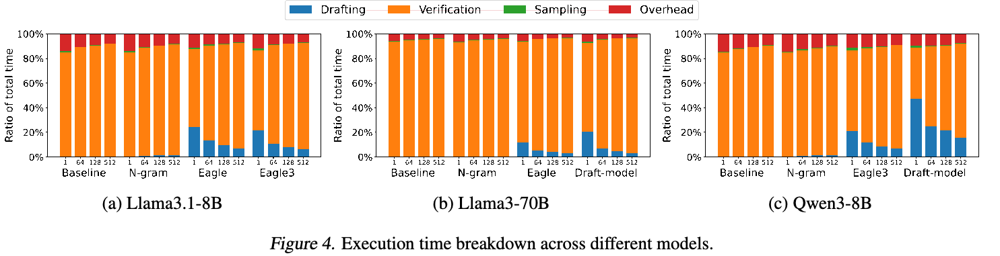
（接上页）因而增加静态内存。EAGLE 类方法增加一个 Transformer 层，需要额外权重，但开销很小：Llama3.1-8B 为 3.1%（EAGLE）／5.3%（EAGLE3），Llama3-70B 为 1.4%（EAGLE），Qwen3-8B 为 4.9%（EAGLE3）。草稿模型方法取决于草稿大小：70B 配 1B 增加 1.8%，Qwen3-8B 配 0.6B 增加较明显的 7.3%。
每 token 内存。指每个生成 token 分配的 KV cache。总占用随已生成但未完成请求数量增长。因此推理等长生成负载中，KV cache 成为主要内存因素。EAGLE 每层仅需单个 attention 层大小的缓存（每 token 4KiB），开销较小，Llama3.1-8B 为 3.1%，Llama3-70B 为 1.3%。草稿模型方法额外多层模型负责提议，每 token 开销明显更高：0.6B 配 8B 时从 144KiB 增至 256KiB，为 1.77 倍。
6 接受行为
为理解接受率，我们测量目标模型每步生成的 token 数4。每个数据集最多取 200 个请求，各 SD 每步最多提议 20 个，记录生成多少。每步即便生成多个，也仅保留一个，推进到下一位置。本质上是近似每个位置最多可接受多少 token。分析两个非推理模型 Llama3-70B、Llama3.1-8B（最长输出 512），以及推理模型 Qwen3-8B-Thinking（最长 32K）。
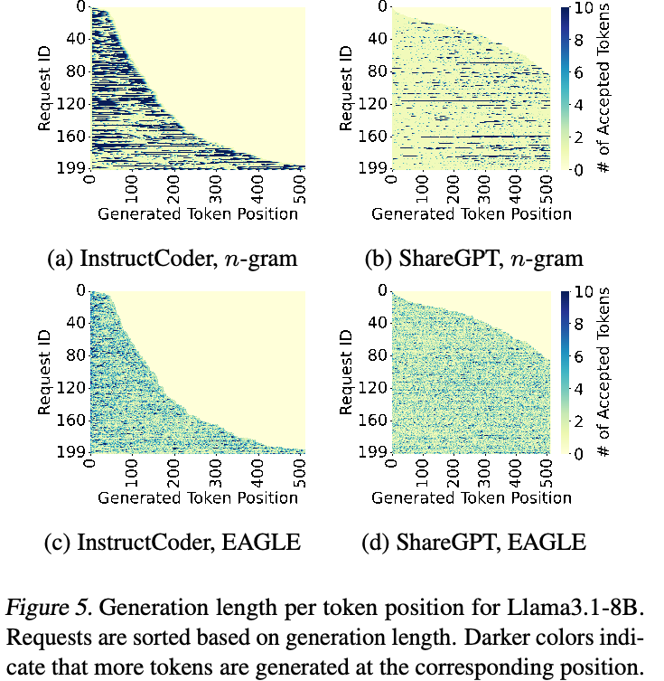
图 5 可视化 InstructCoder、ShareGPT 每个位置生成数量；即便全部草稿拒绝，SD 每位置仍至少生成一个。每行是请求，每列是位置，颜色表示生成数量。
概括。生成 token 长度的差异存在于请求内部、跨请求和跨数据集三个维度。
图 5 直观展示各请求各位置的生成长度。n-gram 与 EAGLE 模式不同：n-gram 方差大，深浅位置很多，有的位置生成很多，有的仅一个。EAGLE 平均生成长度更好（接下页）。
4生成 token 数 = 草稿方法提议且被接受的 token 数 + 1 个奖励 token。同样，生成长度也由接受长度加一计算。
（接上页）平均颜色更深，而且方差较小。但各维度仍有差异，下面详细描述。
请求内部。生成越长，每位置接受 token 越多。n-gram 受益于重复推理模式，但接近结论时重复减少，效用下降。
不同请求长度不同，我们从四类长度各取 50 个请求：小于 4K、4–8K、8–13K、大于 13K。图 6 将 token 位置划分十区间，绘制各区间平均生成长度。
推理负载中，两方法随生成推进，长度通常增加，但 n-gram 增长更陡。Qwen3-8B-Thinking 的 GPQA-Main 上，短输出（小于 4K）中，n-gram 跨序列约生成 1.6–3.7 个，最长输出（大于 13K）为 2.7–5 个。EAGLE-3 增长较缓，从最短请求约 2.1–2.5 到最长约 2.5–5.7。这说明长科学技术生成积累局部重复结构，如重复变量、方程、短语，n-gram 能逐渐利用；EAGLE 类对表面重复较不敏感。
n-gram 在最后几个区间还会下降。可能因为模型由频繁重复的逐步推理，转向较少重复的最终答案和停止，难以复用先前上下文。最后几个区间中更多请求处于最终答案阶段，因此平均生成长度下降。
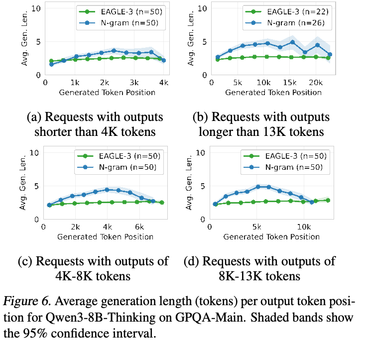
跨请求和数据集。草稿模型方法通常在所有负载上拥有最长的生成长度中位数；EAGLE 每请求更稳定；n-gram 方差更高，分布有重尾。
图 7 中，每请求生成长度差异很大，即便相同负载，效率也截然不同。例如 Llama3-70B、InstructCoder 上，EAGLE 请求级长度较短（2.7–7.4），n-gram 和草稿模型更长且分布更宽，分别 1.1–15.0、5.6–18.3。其他负载，如 ShareGPT、CNN/DailyMail，以及 Qwen3-8B 等目标上，草稿模型同样比 n-gram、EAGLE 更长。
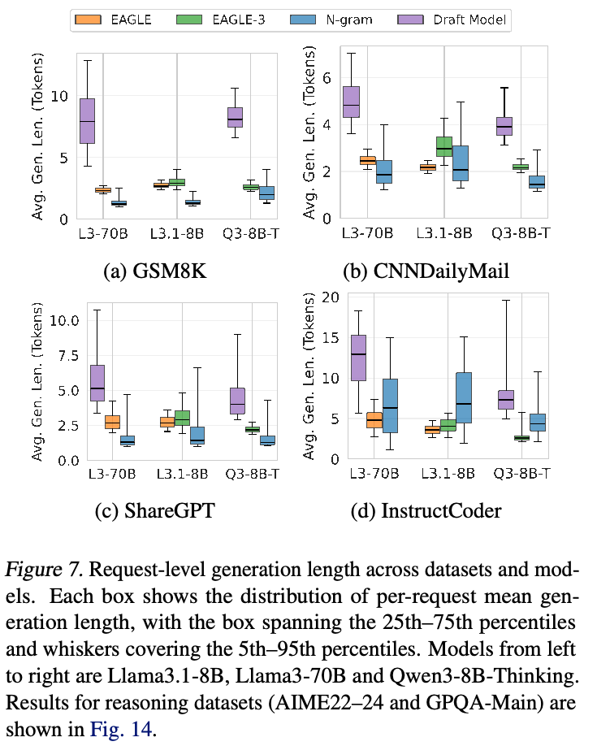
各分布揭示不同提议行为。草稿模型往往长度最长，但其须线也很宽（接下页）。
（接上页）即第 5–95 百分位区间很宽。可能因为对齐依赖请求：有些请求中草稿紧跟目标，接受很多；另一些中较早偏离，仅少数被接受。
n-gram 呈现重尾和大请求间方差，标准差约为 EAGLE 类的 2–5 倍。多数请求接受片段短，但少数突然很长，往往超过 15 个，如图 5 蓝色长条。代码编辑中通常对应复用标识符、函数模板、类定义等局部重复。图 8 展示例子。突发接受说明 n-gram 依赖离散模式匹配，虽然出现不频繁，一旦出现收益很大。因此，局部重复时性能高，但跨请求、负载不稳定。
相反，EAGLE、EAGLE-3 分布紧凑、对称，集中在中位数附近（通常 2–4 token），说明学习到的上下文表示驱动更稳定接受，而非表面重叠。
这与图 1 端到端结果一致：独立草稿运行相对便宜时，草稿模型方法加速最大；EAGLE／EAGLE3 次之，多数负载收益适中；n-gram 在高度重复的代码编辑中最佳，少见但很长的突发接受带来收益。其他场景下，重尾与不稳定接受使性能难以预测。
7 案例：n-gram 在 InstructCoder 上的性能
n-gram 无需训练，因而很有吸引力。我们观察它在 InstructCoder 等代码编辑中加速突出，故专门研究原因。
我们假设优势源自代码编辑固有的局部重复：后续 token 已出现在提示时，查找更可能提议正确续写，并被目标模型接受。使用 BLEU-n（Papineni et al., 2002）量化提示—输出重叠以验证。BLEU-n 衡量重叠 n-gram 比例，越高意味着越强局部复用或复制。每请求计算提示与无 SD 输出的 BLEU，按 0–0.2、0.2–0.4、0.4–0.6、0.6–0.8、0.8–1.0 五区间分组，比较 n-gram 与 EAGLE／EAGLE-3 加速。默认报告 BLEU-4（Papineni et al., 2002），其热力图最清晰，且显示超过某重叠范围后，n-gram 在所有 batch 均更好。用 BLEU-1 至 BLEU-10 重复分析，总体模式相同。
重叠驱动 n-gram 加速。代码编辑输出常复用提示短片段，因此最适合 n-gram。重叠增加时，加速上升，最终超过 EAGLE／EAGLE-3。
高 BLEU-n 与高 n-gram 加速强相关（图 9）。低分重叠少时，提议不准确，性能较差；超过阈值，例如 Llama3.1-8B 的 0.6，n-gram 在所有 batch 始终超过 EAGLE、EAGLE-3。提议 3 个时，相对加速最高多 53%；增加到 5 个，优势边界更清晰，最高多 100%。可能因为高重叠时，更长提议可复用提示或近期上下文的更长重复片段。结果确认其直接受益于代码编辑的提示级重复。
最后，BLEU 分析仅度量完整提示与完整输出的重叠。实际 n-gram 可从包含提示和已生成 token 的完整上下文历史匹配复用。相对于不断演进上下文的重叠分析留待未来。
8 Speculative Decoding 的理论加速上界
本节推导可达加速上界，以理解现有方法离理论最优多远，评估当前限制，揭示未来方向。
第 5 节说明验证主导成本，因此自然要问：如果不验证最终会被拒绝的 token，消除无效验证，最大能加速多少（接下页）？
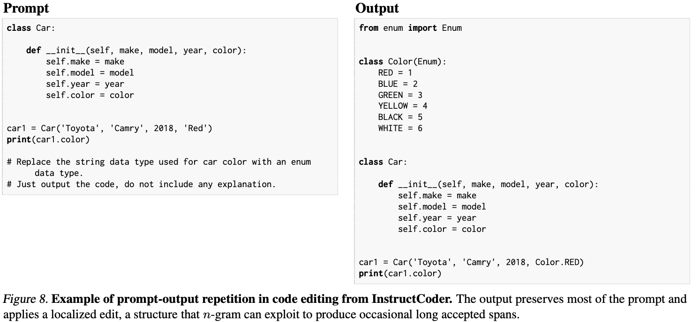
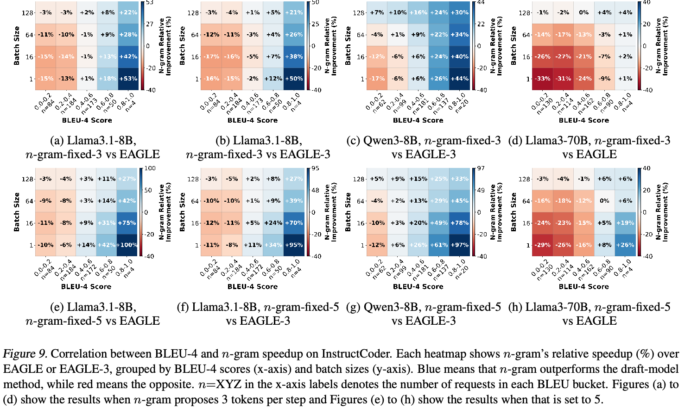
（接上页）换言之，假设存在预言机，或足够准确的机制，只提议可能被接受的 token，可达上界是多少？下面尝试推导这个数值，理解当前加速与理论上界差距。
此外，第 6 节表明不同变体接受行为不同，每步接受 token 数不同。为更好理解真实上界，我们研究组合不同策略能否产生更优接受模式，从而提高总体效率。
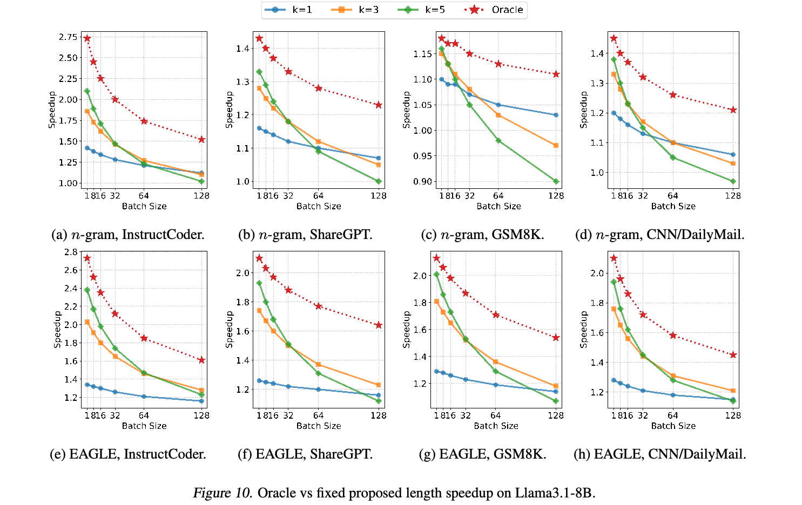
8.1 最小验证成本
首先，如果最小化验证成本，SD 最大能加速多少？我们比较固定提议长度和预言机提议长度。预言机假设事先知道每步接受数量，令提议长度等于实际接受长度，保证全部接受，模拟验证没有拒绝开销的理想情况。
有人可能认为，若全部提议都能完美接受，大模型便不再需要。理论上正确，实践却无法实现，因为没有提议机制能完美预测未来目标 token。因此，预言机配置纯粹作为可达上界，展示实际方法能够接近的性能天花板。
我们在 Llama3.1-8B 的 InstructCoder、ShareGPT、GSM8K、CNN/DailyMail 上分析，观察到预言机与固定长度间显著差距。预言机事先知道每步接受长度，精确提议对应数量，全部 token 都被接受，消除无效推测。
图 10 中，InstructCoder、batch=1、n-gram 下，预言机约加速 2.75 倍，而最佳固定长度 5 约 2.1 倍。batch 增大时差距通常扩大：固定 \(k\) 曲线下降更快，预言机较缓。与图 4 一致，batch 越大验证占比越高，固定 \(k\) 在最终被拒绝 token 上浪费更大开销。
8.2 实现最优加速的自适应方法
EAGLE 通常优于 n-gram，但细察接受行为可见互补。图 11 的逐位置接受数量差异交替呈红色（利于 EAGLE）和蓝色（利于 n-gram）区域，说明两方法（接下页）。
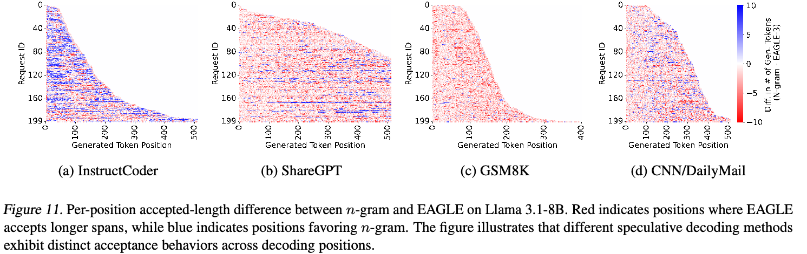
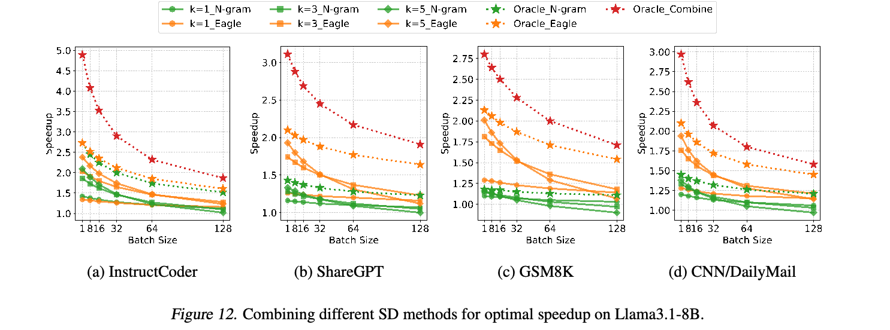
（接上页）在不同条件下擅长不同部分。这很直观：局部规律强的代码，或重复语法模式中，n-gram 常能精确匹配，且很可能正确，提议开销低，因此更高效。局部重复弱的位置，EAGLE 是稳健后备，因为它在多样上下文中更稳定地提出正确 token。
这引出下一问：能否结合优势，获得更高总体加速？
为探索上界，我们假设一个完美预测器，能够（1）确定每位置最佳方法；（2）准确预测该位置接受 token 数。在此理想假设下，测量最大可能加速。
必须注意，这些简化代表上界。首先，假设预测器对每位置方法选择无误。其次，假设完美知道各方法每位置接受数量。最后，忽略维护 EAGLE 提议头 KV cache 的开销；否则请求暂停再恢复时需要部分 prefill。
在这些假设下，图 12 报告最佳可达速度。Oracle_Combine 是理论上界：每位置选择接受片段更长的 EAGLE 或 n-gram，再将该接受长度设为提议长度。相较最佳固定策略，组合预言机揭示大量额外空间，最高进一步加速 2.2 倍。
空间大小高度依赖负载。InstructCoder 差距最大，与图 11 红蓝频繁交替一致，即许多位置一方法显著优于另一方法。ShareGPT、CNN/DailyMail 也有较小但有意义的互补空间。GSM8K 则（接下页）。
（接上页）组合几乎不额外受益，因为 n-gram 很少有长接受片段，Oracle_Combine 因而接近 Oracle_Eagle。
总体而言，这些结果指出有前景方向：开发准确、轻量的预测器，适应跨负载、请求和 token 位置的不同接受行为。
9 结论
本工作首次在真实、优化的推理引擎中系统评估 SD。通过拆解不同负载和变体的端到端性能，确定验证为主要瓶颈，揭示接受行为在位置、请求和数据集间的强差异。利用这些见解，量化理论上界，展示实测与理想效率差距。这些发现深化对实际行为的理解，指出可在大规模推理系统中进一步释放潜力的机会。
10 致谢
感谢 Tomas Ruiz 在 vLLM 实现草稿模型 SD，使我们得以分析比较。感谢 Yilong Zhao、Yifan Qiao 和 Sky Computing Lab 其他成员的讨论反馈。本工作部分由 NVIDIA 赠款支持，包括研究使用的 DGX 服务器。Jiaxiang 获新加坡国家科学奖学金及 NUS Development Grant 支持。本文观点、发现、结论和建议属于作者，不一定反映支持机构立场。
参考文献
ShareGPT 数据集。 https://huggingface.co/datasets/ anon8231489123/ShareGPT_Vicuna_unfiltered, 2024. HuggingFace dataset. AoPS. AIME 试题与解答。 https://artofproblemsolving.com/wiki/index.php/ AIME 试题与解答。 Cai, T., Li, Y ., Geng, Z., Peng, H., Lee, J. D., Chen, D., and Dao, T. Medusa：使用多个 decoding 头的简易 LLM 推理加速框架。arXiv preprint arXiv:2401.10774, 2024. Chen, C., Borgeaud, S., Irving, G., Lespiau, J.-B., Sifre, L., and Jumper, J. 通过 speculative sampling 加速大语言模型 decoding。arXiv preprint arXiv:2302.01318, 2023. Chen, Z., May, A., Svirschevski, R., Huang, Y ., Ryabinin, M., Jia, Z., and Chen, B. Sequoia：可扩展、稳健且硬件感知的 speculative decoding。arXiv preprint arXiv:2402.12374, 2024. Cobbe, K., Kosaraju, V ., Bavarian, M., Chen, M., Jun, H., Kaiser, L., Plappert, M., Tworek, J., Hilton, J., Nakano, R., Hesse, C., and Schulman, J. 训练验证器以解决数学应用题。arXiv preprint arXiv:2110.14168, 2021. Dubey, A., Jauhri, A., Pandey, A., Kadian, A., Al-Dahle, A., Letman, A., Mathur, A., Schelten, A., Yang, A., Fan, A., et al. Llama 3 模型家族。arXiv preprint arXiv:2407.21783, 2024. Frantar, E., Ashkboos, S., Hoefler, T., and Alistarh, D. GPTQ：生成式预训练 transformer 的精确后训练量化, 2023. Fu, Y ., Bailis, P., Stoica, I., and Zhang, H. 使用 Lookahead Decoding 打破 LLM 推理的顺序依赖。arXiv preprint arXiv:2402.02057, 2024. He, H. 消除 LLM 推理中的非确定性。Thinking Machines Lab: Connectionism, Sep 2025. doi: 10.64434/ tml.20250910. https://thinkingmachines.ai/blog/ defeating-nondeterminism-in-llm-inference/. He, Z., Zhong, Z., Cai, T., Lee, J. D., and He, D. REST：基于检索的 speculative decoding, 2024. URL https://arxiv.org/abs/2311.08252. Hermann, K. M., Kocisky, T., Grefenstette, E., Espeholt, L., Kay, W., Suleyman, M., and Blunsom, P. 教机器阅读与理解。Advances in neural information processing systems, 28, 2015. Jimenez, C. E., Yang, J., Wettig, A., Yao, S., Pei, K., Press, O., and Narasimhan, K. R. SWE-bench：语言模型能解决真实 GitHub issue 吗？ InThe Twelfth International Conference on Learning Representations. Kim, S., Hooper, C., Gholami, A., Dong, Z., Li, X., Shen, S., Mahoney, M. W., and Keutzer, K. SqueezeLLM：稠密与稀疏量化, 2024. Kwon, W., Li, Z., Zhuang, S., Sheng, Y ., Zheng, L., Yu, C. H., Gonzalez, J., Zhang, H., and Stoica, I. 通过 PagedAttention 为大语言模型服务提供高效内存管理。 InProceedings of the 29th Symposium on Operating Systems Principles, pp. 611–626, 2023.
Leviathan, Y ., Kalman, M., and Matias, Y . 通过 speculative decoding 实现 transformer 快速推理。 InInternational Conference on Machine Learning, pp. 19274– 19286. PMLR, 2023. Li, K., Hu, Q., Zhao, J., Chen, H., Xie, Y ., Liu, T., Shieh, M., and He, J. InstructCoder：为代码编辑对大语言模型进行指令微调。 InProceedings of the 62nd Annual Meeting of the Association for Computational Linguistics (Volume 4: Student Research Workshop), pp. 50–70, 2024a. Li, Y ., Wei, F., Zhang, C., and Zhang, H. EAGLE：Speculative Sampling 需要重新思考特征不确定性。 In International Conference on Machine Learning, 2024b. Li, Y ., Wei, F., Zhang, C., and Zhang, H. EAGLE-2：通过动态草稿树加速语言模型推理, 2024c. URLhttps://arxiv.org/abs/2406.16858. Li, Y ., Wei, F., Zhang, C., and Zhang, H. EAGLE-3：通过训练时测试扩展大语言模型推理加速。 InAnnual Conference on Neural Information Processing Systems, 2025. Lin, F., Yi, H., Li, H., Yang, Y ., Yu, X., Lu, G., and Xiao, R. BiTA：通过双向调优无损加速大语言模型。arXiv preprint arXiv:2401.12522, 2024. Lin, J., Tang, J., Tang, H., Yang, S., Dang, X., Gan, C., and Han, S. AWQ：用于 LLM 压缩与加速的激活感知权重量化, 2023. Liu, A., Feng, B., Xue, B., Wang, B., Wu, B., Lu, C., Zhao, C., Deng, C., Zhang, C., Ruan, C., Dai, D., Guo, D., Yang, D., Chen, D., Ji, D., Li, E., Lin, F., Dai, F., Luo, F., Hao, G., Chen, G., Li, G., Zhang, H., Bao, H., Xu, H., Wang, H., Zhang, H., Ding, H., Xin, H., Gao, H., Li, H., Qu, H., Cai, J. L., Liang, J., Guo, J., Ni, J., Li, J., Wang, J., Chen, J., Chen, J., Yuan, J., Qiu, J., Li, J., Song, J., Dong, K., Hu, K., Gao, K., Guan, K., Huang, K., Yu, K., Wang, L., Zhang, L., Xu, L., Xia, L., Zhao, L., Wang, L., Zhang, L., Li, M., Wang, M., Zhang, M., Zhang, M., Tang, M., Li, M., Tian, N., Huang, P., Wang, P., Zhang, P., Wang, Q., Zhu, Q., Chen, Q., Du, Q., Chen, R. J., Jin, R. L., Ge, R., Zhang, R., Pan, R., Wang, R., Xu, R., Zhang, R., Chen, R., Li, S. S., Lu, S., Zhou, S., Chen, S., Wu, S., Ye, S., Ye, S., Ma, S., Wang, S., Zhou, S., Yu, S., Zhou, S., Pan, S., Wang, T., Yun, T., Pei, T., Sun, T., Xiao, W. L., Zeng, W., Zhao, W., An, W., Liu, W., Liang, W., Gao, W., Yu, W., Zhang, W., Li, X. Q., Jin, X., Wang, X., Bi, X., Liu, X., Wang, X., Shen, X., Chen, X., Zhang, X., Chen, X., Nie, X., Sun, X., Wang, X., Cheng, X., Liu, X., Xie, X., Liu, X., Yu, X., Song, X., Shan, X., Zhou, X., Yang, X., Li, X., Su, X., Lin, X., Li, Y . K., Wang, Y . Q., Wei, Y . X., Zhu, Y . X., Zhang, Y ., Xu, Y ., Xu, Y ., Huang, Y ., Li, Y ., Zhao, Y ., Sun, Y ., Li, Y ., Wang, Y ., Yu, Y ., Zheng, Y ., Zhang, Y ., Shi, Y ., Xiong, Y ., He, Y ., Tang, Y ., Piao, Y ., Wang, Y ., Tan, Y ., Ma, Y ., Liu, Y ., Guo, Y ., Wu, Y ., Ou, Y ., Zhu, Y ., Wang, Y ., Gong, Y ., Zou, Y ., He, Y ., Zha, Y ., Xiong, Y ., Ma, Y ., Yan, Y ., Luo, Y ., You, Y ., Liu, Y ., Zhou, Y ., Wu, Z. F., Ren, Z. Z., Ren, Z., Sha, Z., Fu, Z., Xu, Z., Huang, Z., Zhang, Z., Xie, Z., Zhang, Z., Hao, Z., Gou, Z., Ma, Z., Yan, Z., Shao, Z., Xu, Z., Wu, Z., Zhang, Z., Li, Z., Gu, Z., Zhu, Z., Liu, Z., Li, Z., Xie, Z., Song, Z., Gao, Z., and Pan, Z. DeepSeek-V3 技术报告, 2025. URL https://arxiv.org/abs/2412.19437. Liu, X., Hu, L., Bailis, P., Stoica, I., Deng, Z., Cheung, A., and Zhang, H. 在线 speculative decoding。arXiv preprint arXiv:2310.07177, 2023. Liu, X., Daniel, C., Hu, L., Kwon, W., Li, Z., Mo, X., Cheung, A., Deng, Z., Stoica, I., and Zhang, H. 使用有效吞吐量优化大语言模型服务的 speculative decoding, 2024. URL https://arxiv.org/abs/ 2406.14066v2. Miao, X., Oliaro, G., Zhang, Z., Cheng, X., Wang, Z., Wong, R. Y . Y ., Chen, Z., Arfeen, D., Abhyankar, R., and Jia, Z. SpecInfer：通过推测推理及 token 树验证加速生成式 LLM 服务。arXiv preprint arXiv:2305.09781, 2023. NVIDIA. CUDA Graphs 入门。 https://developer.nvidia.com/blog/cuda-graphs/, 2024a. Accessed: 2025-04-12. NVIDIA. H100. https://www.nvidia.com/en-us/ data-center/h100/, 2024b. Accessed: 2024-11-19. OpenAI. 介绍 ChatGPT。 https://openai.com/ index/chatgpt/, 2022. Papineni, K., Roukos, S., Ward, T., and Zhu, W.-J. BLEU：一种机器翻译自动评估方法。 InProceedings of the 40th annual meeting of the Association for Computational Linguistics, pp. 311–318, 2002. Project Numina. AI-MO/aimo-validation-aime. https://huggingface.co/datasets/AI-MO/ aimo-validation-aime. Rein, D., Hou, B. L., Stickland, A. C., Petty, J., Pang, R. Y ., Dirani, J., Michael, J., and Bowman, S. R. GPQA：研究生级、无法依赖 Google 解答的问答基准, 2023. URL https://arxiv.org/abs/2311.12022. Saxena, A. 提示查找 decoding, November 2023. URL https://github.com/apoorvumang/ prompt-lookup-decoding/.
See, A., Liu, P. J., and Manning, C. D. 直奔主题：使用指针生成网络进行摘要。 InProceedings of the 55th Annual Meeting of the Association for Computational Linguistics (Volume 1: Long Papers), pp. 1073–1083, Vancouver, Canada, July 2017. Association for Computational Linguistics. doi: 10. 18653/v1/P17-1099. URL https://www.aclweb.org/ anthology/P17-1099. Shah, J., Bikshandi, G., Zhang, Y ., Thakkar, V ., Ramani, P., and Dao, T. FlashAttention-3：借助异步与低精度实现快速准确的 attention。Advances in Neural Information Processing Systems, 37:68658–68685, 2024. Somasundaram, S., Phukan, A., and Saxena, A. PLD+：利用语言模型产物加速 LLM 推理。arXiv preprint arXiv:2412.01447, 2024. Xia, H., Yang, Z., Dong, Q., Wang, P., Li, Y ., Ge, T., Liu, T., Li, W., and Sui, Z. 释放大语言模型推理效率：Speculative Decoding 全面综述。 In Ku, L.-W., Martins, A., and Srikumar, V . (eds.),Findings of the Association for Computational Linguistics ACL 2024, pp. 7655–7671, Bangkok, Thailand and virtual meeting, August 2024. Association for Computational Linguistics. doi: 10.18653/v1/2024.findings-acl.456. URL https://aclanthology.org/2024.findings-acl.456. Yang, A., Li, A., Yang, B., Zhang, B., Hui, B., Zheng, B., Yu, B., Gao, C., Huang, C., Lv, C., Zheng, C., Liu, D., Zhou, F., Huang, F., Hu, F., Ge, H., Wei, H., Lin, H., Tang, J., Yang, J., Tu, J., Zhang, J., Yang, J., Yang, J., Zhou, J., Zhou, J., Lin, J., Dang, K., Bao, K., Yang, K., Yu, L., Deng, L., Li, M., Xue, M., Li, M., Zhang, P., Wang, P., Zhu, Q., Men, R., Gao, R., Liu, S., Luo, S., Li, T., Tang, T., Yin, W., Ren, X., Wang, X., Zhang, X., Ren, X., Fan, Y ., Su, Y ., Zhang, Y ., Zhang, Y ., Wan, Y ., Liu, Y ., Wang, Z., Cui, Z., Zhang, Z., Zhou, Z., and Qiu, Z. Qwen3 技术报告, 2025. URL https://arxiv.org/abs/2505.09388. Ye, Z., Lai, R., Lu, B.-R., Lin, C.-Y ., Zheng, S., Chen, L., Chen, T., and Ceze, L. 级联推理：内存带宽高效的共享前缀 batch decoding, February 2024. URL https://flashinfer.ai/2024/02/02/ cascade-inference.html. Ye, Z., Chen, L., Lai, R., Lin, W., Zhang, Y ., Wang, S., Chen, T., Kasikci, B., Grover, V ., Krishnamurthy, A., et al. FlashInfer：面向 LLM 推理服务的高效可定制 attention 引擎。Proceedings of Machine Learning and Systems, 7, 2025. Zeng, A., Lv, X., Zheng, Q., Hou, Z., Chen, B., Xie, C., Wang, C., Yin, D., Zeng, H., Zhang, J., Wang, K., Zhong, L., Liu, M., Lu, R., Cao, S., Zhang, X., Huang, X., Wei, Y ., Cheng, Y ., An, Y ., Niu, Y ., Wen, Y ., Bai, Y ., Du, Z., Wang, Z., Zhu, Z., Zhang, B., Wen, B., Wu, B., Xu, B., Huang, C., Zhao, C., Cai, C., Yu, C., Li, C., Ge, C., Huang, C., Zhang, C., Xu, C., Zhu, C., Li, C., Yin, C., Lin, D., Yang, D., Jiang, D., Ai, D., Zhu, E., Wang, F., Pan, G., Wang, G., Sun, H., Li, H., Li, H., Hu, H., Zhang, H., Peng, H., Tai, H., Zhang, H., Wang, H., Yang, H., Liu, H., Zhao, H., Liu, H., Yan, H., Liu, H., Chen, H., Li, J., Zhao, J., Ren, J., Jiao, J., Zhao, J., Yan, J., Wang, J., Gui, J., Zhao, J., Liu, J., Li, J., Li, J., Lu, J., Wang, J., Yuan, J., Li, J., Du, J., Du, J., Liu, J., Zhi, J., Gao, J., Wang, K., Yang, L., Xu, L., Fan, L., Wu, L., Ding, L., Wang, L., Zhang, M., Li, M., Xu, M., Zhao, M., Zhai, M., Du, P., Dong, Q., Lei, S., Tu, S., Yang, S., Lu, S., Li, S., Li, S., Shuang-Li, Yang, S., Yi, S., Yu, T., Tian, W., Wang, W., Yu, W., Tam, W. L., Liang, W., Liu, W., Wang, X., Jia, X., Gu, X., Ling, X., Wang, X., Fan, X., Pan, X., Zhang, X., Zhang, X., Fu, X., Zhang, X., Xu, Y ., Wu, Y ., Lu, Y ., Wang, Y ., Zhou, Y ., Pan, Y ., Zhang, Y ., Wang, Y ., Li, Y ., Su, Y ., Geng, Y ., Zhu, Y ., Yang, Y ., Li, Y ., Wu, Y ., Li, Y ., Liu, Y ., Wang, Y ., Li, Y ., Zhang, Y ., Liu, Z., Yang, Z., Zhou, Z., Qiao, Z., Feng, Z., Liu, Z., Zhang, Z., Wang, Z., Yao, Z., Wang, Z., Liu, Z., Chai, Z., Li, Z., Zhao, Z., Chen, W., Zhai, J., Xu, B., Huang, M., Wang, H., Li, J., Dong, Y ., and Tang, J. GLM-4.5：Agent、推理与编码（ARC）基础模型, 2025. URLhttps://arxiv.org/abs/2508.06471. Zheng, L., Yin, L., Xie, Z., Sun, C., Huang, J., Yu, C. H., Cao, S., Kozyrakis, C., Stoica, I., Gonzalez, J. E., et al. SGLang：高效执行结构化语言模型程序。arXiv preprint arXiv:2312.07104, 2024. Zhou, Y ., Lyu, K., Rawat, A. S., Menon, A. K., Rostamizadeh, A., Kumar, S., Kagy, J.-F., and Agarwal, R. DistillSpec：通过知识蒸馏改善 speculative decoding。arXiv preprint arXiv:2310.08461, 2023.
A 附录
A.1 数据集
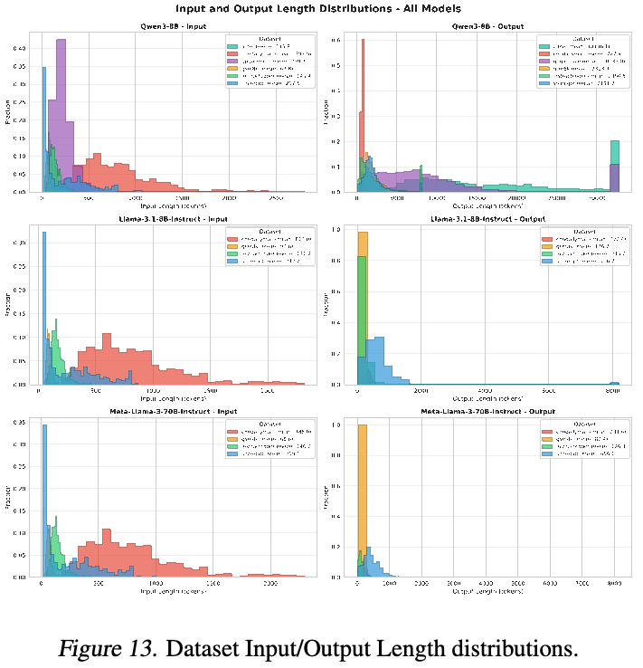
A.2 内存拆解计算
静态内存（GiB）。假设 FP16 权重，每参数 2 字节，模型权重静态 GPU 内存为：
\[M_{\mathrm{static,GiB}}=\frac{(P_{\mathrm{target}}+P_{\mathrm{draft}})\cdot2}{2^{30}}.\]其中 \(P_{\mathrm{target}}\) 为目标模型参数量，\(P_{\mathrm{draft}}\) 包括 SD 引入的全部额外参数，两者单位均为十亿。
译注：原文此处称参数量以十亿计，但所列公式没有 \(10^9\) 因子；下文数值例子包含该因子。公式与例子均按原文保留。
对 EAGLE／EAGLE3，\(P_{\mathrm{draft}}\) 指用于 SD 的参数。所用 EAGLE 中，它是自回归预测头参数，包括一个 decoding 层和一个全连接（FC）层，与目标共享 embedding 层和语言建模（LM）头。所用 EAGLE3 中，则指整个 EAGLE3 模型，包括一个 decoding 层、多层特征融合 FC 层、最终归一化层及自己的 LM 头。此外 checkpoint 包含两个一维 token ID 重映射表 t2d、d2t，在目标词表与草稿 LM 头词表间转换，通常内存可忽略。vLLM v0.10.1.1 加载权重时跳过 t2d 张量，我们统计参数量时也排除。同样，这些 EAGLE3 复用目标 embedding 层。
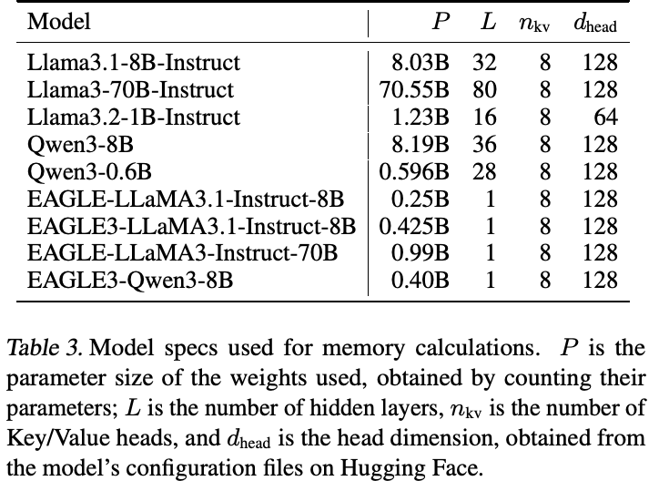
Qwen3-0.6B 的 tie_word_embeddings 默认为 True，LM 头与 embedding 层共享权重，因此排除其 LM 头大小。
例如，Llama3-70B-Instruct 以 Llama3.2-1B-Instruct 为草稿时，静态内存为 \((70.55+1.23)\times10^9\times2/2^{30}=133.7\,\mathrm{GiB}\)。Llama3.1-8B-Instruct 配 EAGLE-LLaMA3.1-Instruct-8B 时，为 \((8.03+0.25)\times10^9\times2/2^{30}=15.42\,\mathrm{GiB}\)。
每 token KV cache（KiB）。每个生成 token 的 KV cache 为：
\[M_{\mathrm{KV/token,KiB}}=\frac{L_h\cdot2\cdot n_{kv}\cdot d_{\mathrm{head}}\cdot2}{2^{10}}.\]\(L_h\) 是隐藏层数，\(n_{kv}\) 为 KV 头数（所用模型均基于 GQA），\(d_{\mathrm{head}}\) 为头维度；第一个 2 表示 Key 与 Value，最后一个 2 是 FP16 每元素字节数。Llama3-70B-Instruct 无 SD 或使用 n-gram 等无模型方法时为 \(80\times2\times8\times128\times2/2^{10}=320\,\mathrm{KiB}\)；Llama3.1-8B-Instruct 为 \(32\times2\times8\times128\times2/2^{10}=128\,\mathrm{KiB}\)。
草稿模型方法的每 token 总 KV cache 是目标与草稿之和。70B 配 1B 时为 \(80\times2\times8\times128\times2/2^{10}+16\times2\times8\times64\times2/2^{10}=352\,\mathrm{KiB}\)。
同样，EAGLE 类为目标与 EAGLE 头之和。原文以 Llama3-70B-Instruct、Llama3.2-1B-Instruct 为例，列出 \(80\times2\times8\times128\times2/2^{10}+1\times2\times8\times128\times2/2^{10}=324\,\mathrm{KiB}\)。这里 1 表示 EAGLE 额外使用一个 transformer 块，相当于多一层。
译注：最后这个 EAGLE 示例的模型名称按原文保留，但与其采用单层 EAGLE 头的算式存在不一致。
A.3 接受行为
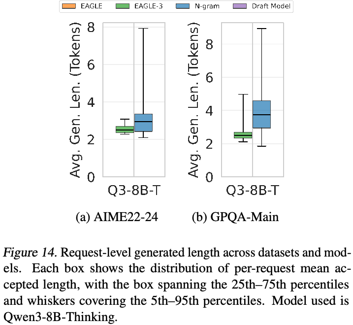
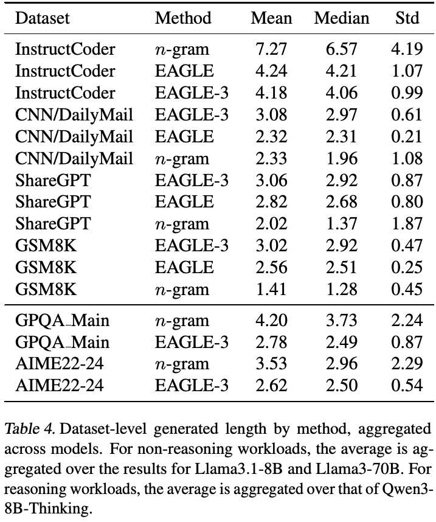
B 复现产物附录
B.1 摘要
产物包含两部分。第一部分是基于 vLLM 的性能分析套件，包括 SD 实现和基准脚本，涵盖多模型、多方法（N-gram、EAGLE、EAGLE-3、Draft Model、MTP）的端到端吞吐量、时间拆解和接受率实验。完整复现需要 Linux、Python 3.10、CUDA 12.8、conda／uv、Hugging Face 的受限 Llama-3 模型访问权限、一次性 ShareGPT 下载，以及 H100-80GB GPU：8B 用 1 块，70B／106B 用 4 块。第二部分是轻量模拟器，可在安装 Python 3.10 的任何笔记本运行，利用附带预采集接受轨迹，复现上界和组合提议器分析。评估者可运行分析脚本，重新生成 Llama3.1-8B 主端到端结果，和／或运行模拟器复现预言机上界分析。预期输出为 PDF 图，趋势接近图 1(a)–(d)、图 9 和图 11。
B.2 产物检查清单（元信息）
- 算法：N-gram、EAGLE、EAGLE-3、Draft Model、MTP；SD 性能模拟。
- 程序：（1）Python 3.10、按分支从源码构建的 vLLM；（2）Python 3.10、tqdm、pandas、matplotlib。
- 编译：（1）通过
rebuild_env.sh执行uv pip install -e .，CUDA 12.8；（2）pip install -r requirements.txt，不需 GPU。 - 数据集：（1）InstructCoder、CNN/DailyMail、GSM8K、AIME、GPQA 从 Hugging Face 自动下载；ShareGPT 一次性下载，见 B.4；（2）预采集接受数据在
simulator/data/。 - 运行环境：（1）Linux、CUDA 12.8、conda；（2）任何支持 Python 3.10 的操作系统。
- 硬件：（1）1–4 块 H100-80GB；（2）不需 GPU。
- 运行状态：（1）其他进程不应占用目标 GPU；（2）不适用。
- 执行：（1）
run-l3-8b.sh分析 Llama3.1-8B 端到端性能；（2）./simulate_and_plot.sh。 - 指标：（1）吞吐量加速、接受率、时间拆解 x；（2）模拟加速随 batch 的变化。
- 输出：（1）
scripts/results/run_<timestamp>/中的 .jsonl 结果和日志；（2）results/{proposer}_{dataset}_speedup.csv与figures/llama3.1-8B/中的 PDF。 - 实验：（1）单 H100 上
run-l3-8b.sh需 24–36 小时；（2）simulate_and_plot.sh需 30–40 分钟。 - 约需多少磁盘空间？建议 500GB 可用空间。
- 准备流程约需多久？（1）每个环境构建约 30–40 分钟；（2）少于 5 分钟。
- 实验约需多久？见上文实验项。
- 是否公开？是。
- 数据许可？适用时见 Hugging Face 模型／数据集卡片。
B.3 描述
B.3.1 获取方式
（1）vLLM 套件：https://github.com/SpecDecode-Bench/vllm；（2）模拟器：https://github.com/SpecDecode-Bench/simulator。更多信息均见 README.md。
B.3.2 硬件依赖
（1）性能分析：8B 用 1 块 H100-80GB，更大模型用 4 块；（2）模拟：不需 GPU，任何 Python 3.10 机器即可。
B.3.3 软件依赖
（1）conda、Python 3.10、由 rebuild_env.sh 管理的 uv、matplotlib，以及受限 Llama-3 模型的 Hugging Face 访问 token；（2）Python 3.10、tqdm、pandas、matplotlib，通过 pip install -r requirements.txt 安装。
B.3.4 数据集
（1）除 ShareGPT 外都通过 Hugging Face datasets 自动下载；ShareGPT 一次下载，见 B.4；（2）H100 上 Llama-3.1-8B-Instruct 的预采集 JSONL 接受数据位于 simulator/data/llama3.1-8B/，包括 gsm8k、instructcoder、sharegpt、cnn。
B.4 安装
（1）vLLM 套件：ShareGPT（一次性）：
huggingface-cli download \
anon8231489123/ShareGPT_Vicuna_unfiltered \
ShareGPT_V3_unfiltered_cleaned_split.json \
--repo-type dataset --local-dir /path/to/data/
export SHAREGPT_PATH=/path/to/dataset（1）vLLM 套件：环境（每个分支重复，接下页）：
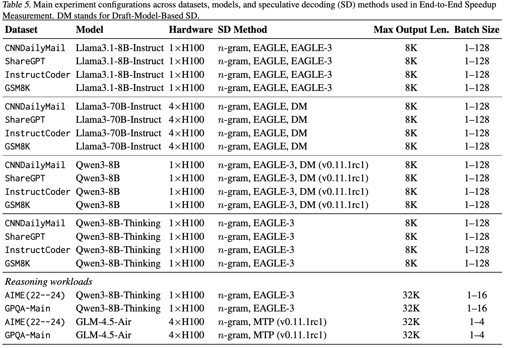
git checkout <branch>
ENV_DIR=/path/to/envs bash scripts/rebuild_env.sh
conda activate /path/to/envs（2）模拟器：
cd simulator/
conda create -n specbench_simulator python=3.10 -y
conda activate specbench_simulator
pip install -r requirements.txtB.5 实验流程
（1）vLLM 性能分析。在目标脚本顶部设置 CUDA_VISIBLE_DEVICES，随后在 scripts/ 中执行：
export SHAREGPT_PATH=/path/to/sharegpt.json
bash run-l3-8b.sh # 1 GPU每个脚本执行 warmup、所有数据集 × 方法，再调用 vis_speedup.py，在 results/run_<timestamp>/figures/ 生成 PDF。
（2）模拟器。
cd simulator/
./simulate_and_plot.sh它在全部四个数据集运行 EAGLE-3、N-gram 和组合提议器，将 CSV 保存至 results/，PDF 保存至 figures/llama3.1-8B/。
B.6 评估与预期结果
（1）vLLM 性能分析。运行 run-l3-8b.sh 后，预期复现图 1(a)–(d) 的相同端到端结果。
（2）模拟器。预期复现图 9、图 11 的相同结果。
B.7 自定义实验
（1）vLLM 性能分析。设置 num_reqs=5、batch_sizes="1 16"，可进行小于 10 分钟的冒烟测试，需用非推理脚本。编辑 for 循环可开关各数据集、方法。
（2）模拟器。通过 main.py 的命令行参数配置各提议器、数据集、预测方法和 batch 大小。更多信息见 GitHub README（接下页）。
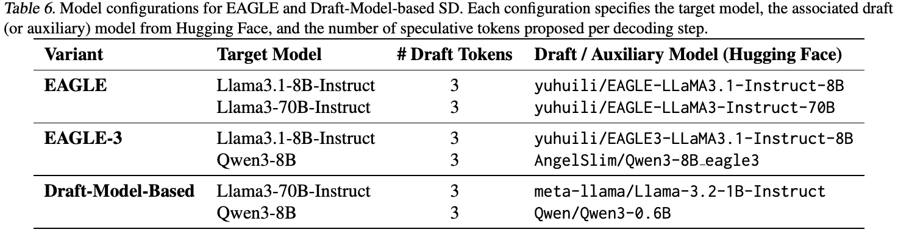
B.8 注意事项
性能分析中，每次脚本运行都写入新的时间戳目录。每个分支需要独立虚拟环境。